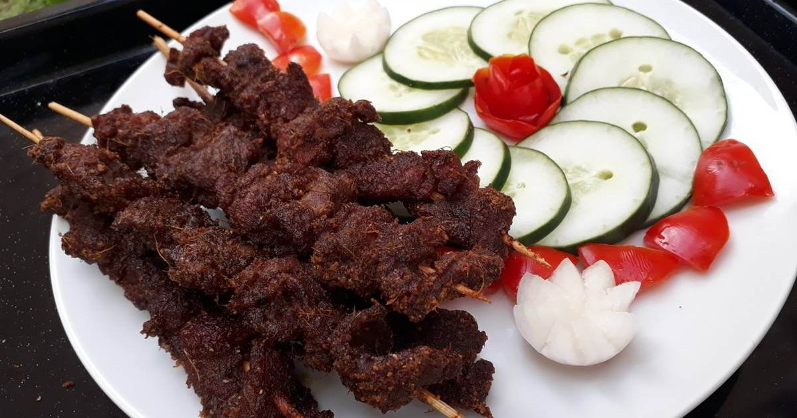

Nigerian Suya

Description
This simple, spicy kebab dish allows you
to replicate the delicacy sold by Nigerian street vendors.
Ingrediants
- 1 tablespoon finely ground roasted peanuts
- 1 teaspoon ground cayenne pepper
- 1 teaspoon ground paprika
- 1½ pounds beef tri-tip steak, cut into bite-size pieces
- ¼ onion, cut into bite-size pieces
- ½ teaspoons salt
- ½ teaspoon onion powder
Steps
- Mix ground peanuts, cayenne pepper, paprika,
salt, ginger, garlic powder,
and onion powder together in a bowl.
- Combine spice mixture and beef in a
resealable plastic bag; shake until well coated.
Marinate in the refrigerator, about 30 minutes.
- Preheat an outdoor grill for
medium-high heat and lightly oil the grate.
- Place beef, bell pepper, onion, and mushrooms
in alternating order onto skewers.